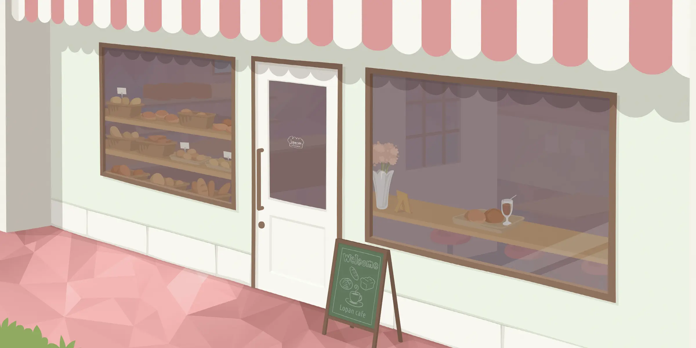
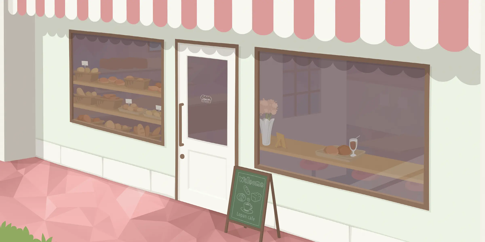

News

スライドショー
画像数枚がフェードで切り替わるだけの、操作とかできない、超シンプルな観賞用スライドショー。
基本構造
クラスc-slideshowを付与した要素の中に、クラスitem要素で括ったimg要素を並べる。
<div class="c-slideshow">
<figure class="item"><img src="../../assets/img/visual_1.webp" alt="" width="2400" height="1200"></figure>
<figure class="item"><img src="../../assets/img/visual_2.webp" alt="" width="2400" height="1200" loading="lazy"></figure>
</div>
基本CSSは以下の通り。スライドショーする画像はすべて同じサイズ推奨。サイズが違う場合は一枚めの画像サイズ・アスペクト比でトリミングされる。
.c-slideshow {
--interval: 8s;
position: relative;
overflow: hidden;
}
.c-slideshow .item:not(:first-child) {
position: absolute;
inset: 0;
}
.c-slideshow .item img {
width: 100%;
height: 100%;
object-fit: cover;
}
画像切り替えは@keyframes規則で定義したキーフレームアニメーション。同じアニメーションを、画像ごとに開始位置（animation-delay）をズラして適用している。
.c-slideshow .item {
animation: slideshow_fade linear infinite, slideshow_zoom linear infinite;
animation-duration: calc(var(--interval) * 2);
}
@keyframes slideshow_fade {
from, 22.5%, 77.5%, to { opacity: 0; }
27.5%, 72.5% { opacity: 1; }
}
@keyframes slideshow_zoom {
from, 22.5%, to { transform: scale(1.1); }
77.5% { transform: none; }
}
.c-slideshow .item:nth-child(1) {
animation-delay: calc(var(--interval) * -.5);
}
.c-slideshow .item:nth-child(2) {
animation-delay: calc(var(--interval) * .5);
}
/* 3枚め以降 */
.c-slideshow .item:nth-child(3) { animation-delay: calc(var(--interval) * 1.5); }
.c-slideshow .item:nth-child(4) { animation-delay: calc(var(--interval) * 2.5); }
.c-slideshow .item:nth-child(5) { animation-delay: calc(var(--interval) * 3.5); }
.c-slideshow .item:nth-child(6) { animation-delay: calc(var(--interval) * 4.5); }
仕組み
キーフレームは、フェード用とズーム用の2種類。下図は画像が2枚の時用のキーフレーム。
なので、1枚あたりの表示時間（※以下、インターバルという）はキーフレーム全体の二分の一（50%）。
最初にフェードインする猶予を設けるため、インターバルの半分（25%）、透明の期間を空けておく。
フェードにかける時間は、インターバルの十分の一（5%）で、フェードの中間が切り替わり地点を跨ぐようにフェードする。（※フェードインの時でいうと、25%の2.5%手前（22.5%）からフェードインし出して、2.5%先（77.5%）でフェードインし切る、という具合。）
ズームは、フェードインし出す地点（22.5%）から、フェードアウトし終える地点（77.5%）にかけてズームアウトしていく。
animationプロパティに、上で用意したキーフレームを、画像ごとにインターバル分ずつズラして適用している。
1枚めは25%進んだところから開始し、2枚めはそこから50%待ってから開始する。ここではインターバルを8秒に設定しているので、1枚めはキーフレームの4秒先から開始し、2枚めはそこ（-4秒）から8秒後に開始される。
※インターバルは、CSS変数「--interval」で設定している。
画像の枚数によってキーフレームを変える
デフォルトは画像2枚用。画像の枚数ごとに、バリエーションクラス（-item3、-item4…）を付与する（6枚まで用意してある）。

 

<div class="c-slideshow -item3">
<figure class="item"><img src="../../assets/img/visual_1.webp" alt="" width="2400" height="1200"></figure>
<figure class="item"><img src="../../assets/img/visual_2.webp" alt="" width="2400" height="1200" loading="lazy"></figure>
<figure class="item"><img src="../../assets/img/visual_3.webp" alt="" width="2400" height="1200" loading="lazy"></figure>
</div>
バリエーションクラスにより、animation-nameプロパティ（アニメーション名）と、animation-durationプロパティ（アニメーションする長さ）が変わる。
.c-slideshow.-item3 .item {
animation-name: slideshow_fade3, slideshow_zoom3;
animation-duration: calc(var(--interval) * 3);
}
@keyframes slideshow_fade3 {
from, 15%, 51.67%, to { opacity: 0; }
18.33%, 48.33% { opacity: 1; }
}
@keyframes slideshow_zoom3 {
from, 15%, to { transform: scale(1.1); }
51.67% { transform: none; }
}
画像が3枚の時も、キーフレームの仕組みは2枚の時と同じ。
インターバルはキーフレーム全体の三分の一（33.33%）になり、フェードにかける時間はインターバルの十分の一（3.33%）と、どちらも半端な数値なので計算がちょっとややこやしいけど、仕組みは同じ。
上のキーフレームを、インターバル分ズラして適用する。アニメーション全体の長さも、画像3枚分にする（インターバル8秒なら24秒）。
1枚めは0.5インターバル分進んだところから開始し、2枚め以降は、そこから1インターバル分ずつ遅れて開始される。
キーフレーム例
画像が4枚（1インターバル25%）。
.c-slideshow.-item4 .item {
animation-name: slideshow_fade4, slideshow_zoom4;
animation-duration: calc(var(--interval) * 4);
}
@keyframes slideshow_fade4 {
from, 11.25%, 38.75%, to { opacity: 0; }
13.75%, 36.25% { opacity: 1; }
}
@keyframes slideshow_zoom4 {
from, 11.25%, to { transform: scale(1.1); }
38.75% { transform: none; }
}
画像が5枚（1インターバル20%）。
.c-slideshow.-item5 .item {
animation-name: slideshow_fade5, slideshow_zoom5;
animation-duration: calc(var(--interval) * 5);
}
@keyframes slideshow_fade5 {
from, 9%, 31%, to { opacity: 0; }
11%, 29% { opacity: 1; }
}
@keyframes slideshow_zoom5 {
from, 9%, to { transform: scale(1.1); }
31% { transform: none; }
}
画像が6枚（1インターバル16.66%）。
.c-slideshow.-item6 .item {
animation-name: slideshow_fade6, slideshow_zoom6;
animation-duration: calc(var(--interval) * 6);
}
@keyframes slideshow_fade6 {
from, 7.5%, 25.82%, to { opacity: 0; }
9.16%, 24.16% { opacity: 1; }
}
@keyframes slideshow_zoom6 {
from, 7.5%, to { transform: scale(1.1); }
25.82% { transform: none; }
}
レスポンシブ
picture要素を使って、ビューポート幅をブレークポイントに画像を出し分ける。
<div class="c-slideshow -item4">
<figure class="item"><picture>
<source srcset="../../assets/img/visual_1.webp" width="2400" height="1200" media="(min-width:768px)">
<source srcset="../../assets/img/visual_1_mb.webp" width="1200" height="800" media="(max-width:767px)">
<img src="../../assets/img/visual_1.webp" alt="" width="2400" height="1200">
</picture></figure>
︙
<figure class="item"><picture>
<source srcset="../../assets/img/visual_4.webp" width="2400" height="1200" media="(min-width:768px)">
<source srcset="../../assets/img/visual_4_mb.webp" width="1200" height="800" media="(max-width:767px)">
<img src="../../assets/img/visual_4.webp" alt="" width="2400" height="1200" loading="lazy">
</picture></figure>
</div>